Kawanishicho, Nara: things to do, food and stays
Kawanishicho · Nara
Kawanishicho
Highlighted on the Nara map.
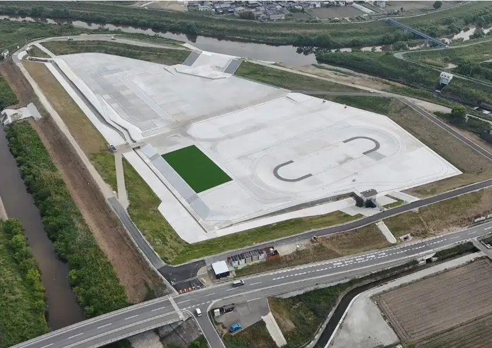
Stay
メルベーユ大塚／民泊
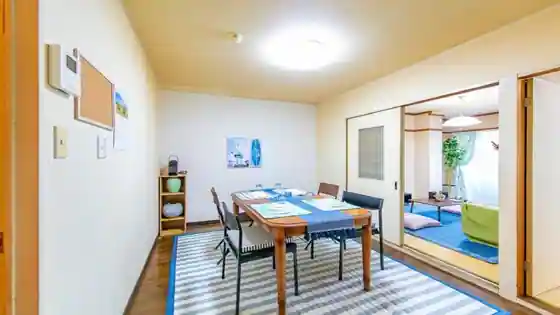
Merubeyu Otsuka / Minpaku
Dining
ちかみちらーめん
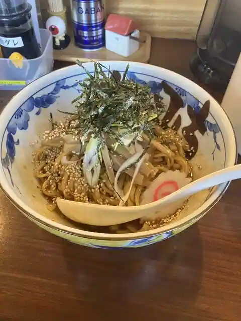
Chikamichi Ramen
La麺 Monna Lisa
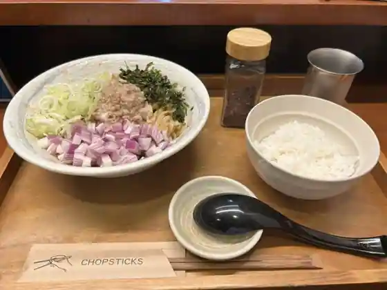
La Men Monna Lisa
手づくりうどん美ノ吉
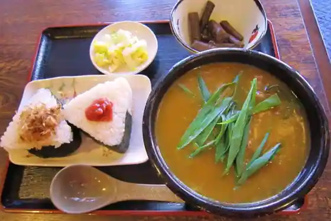
Tezu Kuriudon Bi No Kichi
杉
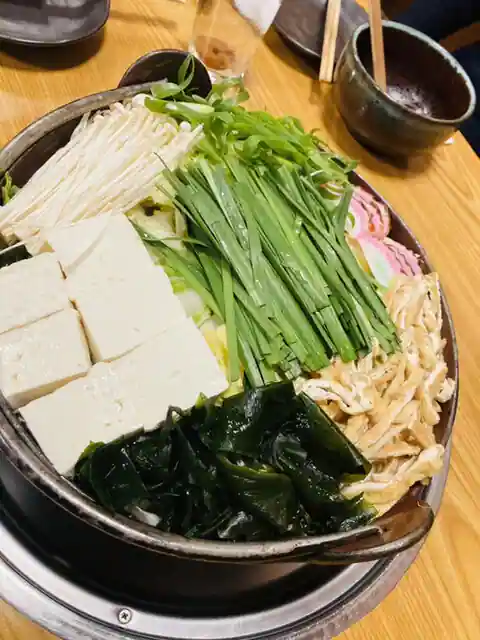
Sugi
corins garden
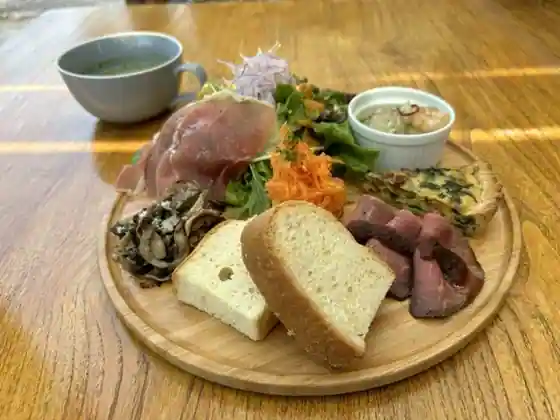
corins garden
あづま
Azuma
ととかか
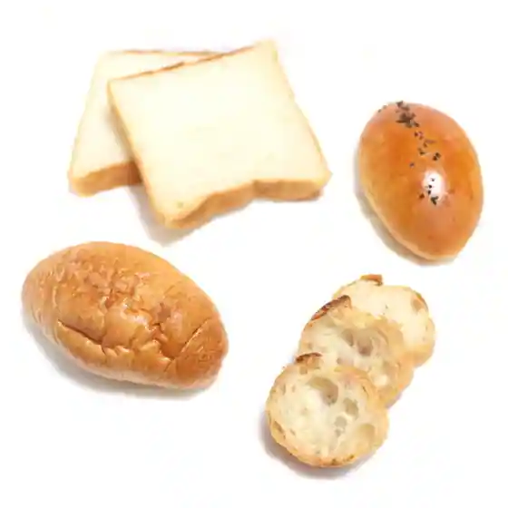
Totokaka
お好み焼き 乃ぶ
O Konomi Yaki No Bu
いちからてん
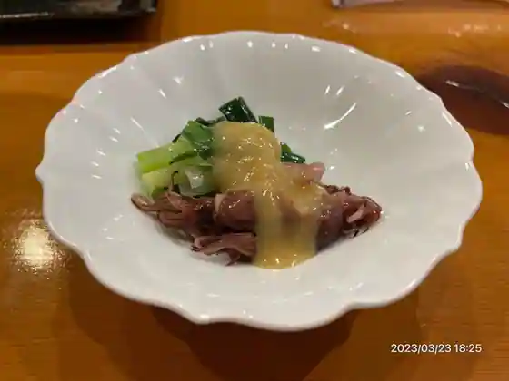
Ichikaraten
cafe nukunuku グルテンフリーの店
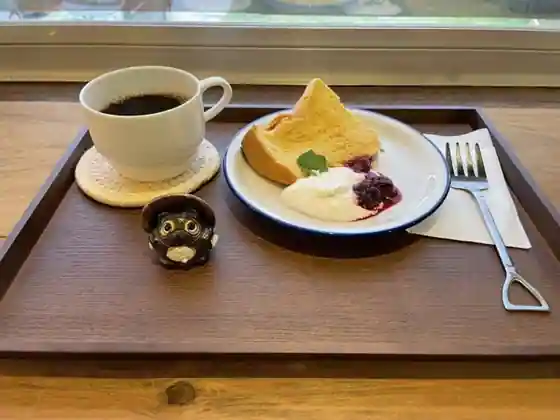
cafe nukunuku Gurutenfuri No
ヨリミチ喫茶店
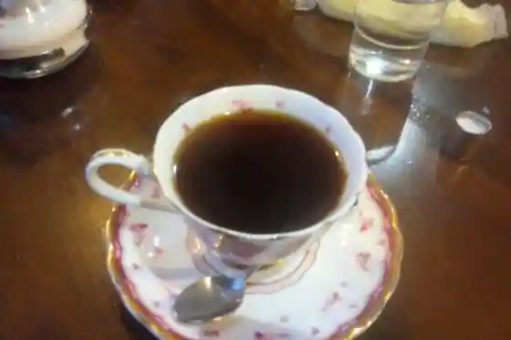
Yorimichi Kissa
こだわり居酒屋 とらや
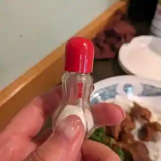
Kodawari Izakaya Toraya
榛の木
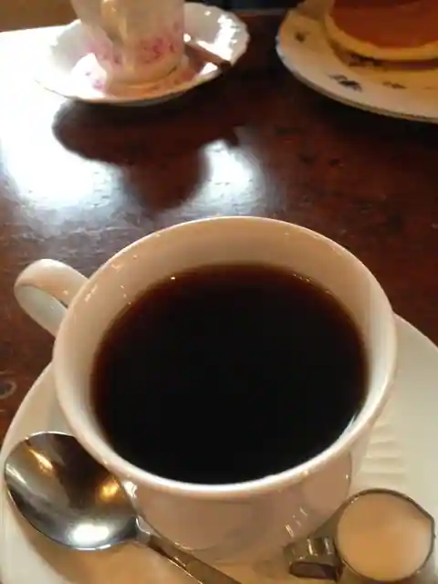
Shin No Ki
Sights
Obaru Park Kawanishi
Rekishi Ni Iko Kashihara City Museum
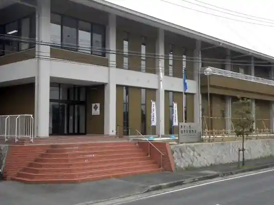
Abura Kake Jizo
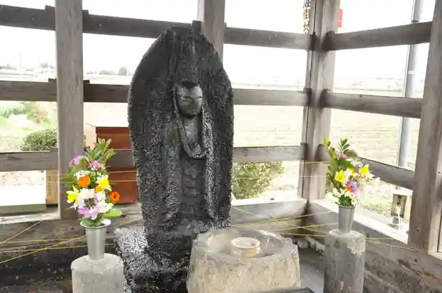
Men Tsuka
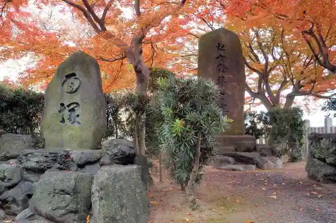